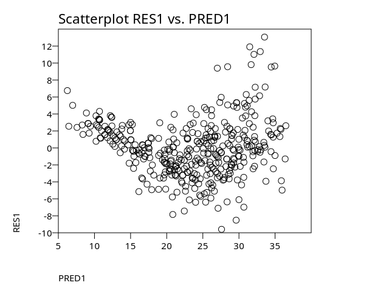

PSPP Syntax: Inferential and Modeling Procedures
INDEX
Exploratory Procedures
Inferential & Modeling Procedures
PSPP Syntax - Inferential Analysis Procedures
This page presents PSPP's Inferential and Modeling procedures - commands used to compare groups, test hypotheses, and fit simple statistical models. It includes the t-test, one-way ANOVA, the GLM version of one‑way ANOVA, a short example showing how to compute the p-value for an F-statistic, and an overview of PSPP’s nonparametric tests. Each section provides minimal, practical syntax and output so you can apply these methods directly to your own data.
This page explains PSPP syntax commands used for data analysis. The focus is entirely on syntax, not the GUI. psppire is mentioned only to show where the equivalent menu item is located, so users who prefer the GUI can find the same procedure. All examples, instructions, and workflows on this page use PSPP syntax, not psppire (even though a few do).
For basic exploratory commands such as descriptives, frequencies, and crosstabs, see PSPP Syntax: Exploratory Procedures.
A short example of PSPP syntax for running a t-test is:
T-TEST /TESTVAL=0 /VARIABLES=score.T-TEST
The T-TEST procedure compares means between one or two groups or between two related measurements. PSPP supports one-sample, independent samples, and paired-samples T-tests.
Three Examples of T-test
Data:
group score pretest posttest 1 42 40 48 1 55 52 58 1 47 45 50 2 60 58 62 2 65 63 68 2 70 67 72One-sample T-test
This command can be found in the PSPPIRE GUI Data Editor menu at Analyze->Compare Means->One Sample T Test.
Code:
T-TEST /TESTVAL = 50 /VARIABLES = score. T-TEST /GROUPS = group(1 2) /VARIABLES = score. T-TEST /PAIRS = pretest WITH posttest.Output:
DATA LIST LIST /group score pretest posttest. Reading free-form data from INLINE. ╭────────┬──────╮ │Variable│Format│ ├────────┼──────┤ │group │F8.0 │ │score │F8.0 │ │pretest │F8.0 │ │posttest│F8.0 │ ╰────────┴──────╯ BEGIN DATA 1 42 40 48 1 55 52 58 1 47 45 50 2 60 58 62 2 65 63 68 2 70 67 72 END DATA. LIST. Data List ╭─────┬─────┬───────┬────────╮ │group│score│pretest│posttest│ ├─────┼─────┼───────┼────────┤ │ 1.00│42.00│ 40.00│ 48.00│ │ 1.00│55.00│ 52.00│ 58.00│ │ 1.00│47.00│ 45.00│ 50.00│ │ 2.00│60.00│ 58.00│ 62.00│ │ 2.00│65.00│ 63.00│ 68.00│ │ 2.00│70.00│ 67.00│ 72.00│ ╰─────┴─────┴───────┴────────╯ T-TEST /TESTVAL = 50 /VARIABLES = score. One-Sample Statistics ╭─────┬─┬─────┬──────────────┬─────────╮ │ │N│ Mean│Std. Deviation│S.E. Mean│ ├─────┼─┼─────┼──────────────┼─────────┤ │score│6│56.50│ 10.67│ 4.36│ ╰─────┴─┴─────┴──────────────┴─────────╯ One-Sample Test ╭─────┬──────────────────────────────────────────────────────────────────────────────────╮ │ │ Test Value = 50 │ │ ├────┬──┬───────────────┬───────────────┬──────────────────────────────────────────┤ │ │ │ │ │ │ 95% Confidence Interval of the Difference│ │ │ │ │ │ ├─────────────────────┬────────────────────┤ │ │ t │df│Sig. (2-tailed)│Mean Difference│ Lower │ Upper │ ├─────┼────┼──┼───────────────┼───────────────┼─────────────────────┼────────────────────┤ │score│1.49│ 5│ .196│ 6.50│ -4.70│ 17.70│ ╰─────┴────┴──┴───────────────┴───────────────┴─────────────────────┴────────────────────╯Independent Samples T-Test
This command can be found in the PSPPIRE Data Editor menus at Analyze-> Compare Means->Independent Samples T Test.
T-TEST /GROUPS = group(1 2) /VARIABLES = score. Group Statistics ╭───────────┬─┬─────┬──────────────┬─────────╮ │ Group│N│ Mean│Std. Deviation│S.E. Mean│ ├───────────┼─┼─────┼──────────────┼─────────┤ │score 1.00 │3│48.00│ 6.56│ 3.79│ │ 2.00 │3│65.00│ 5.00│ 2.89│ ╰───────────┴─┴─────┴──────────────┴─────────╯ Independent Samples Test ╭─────────────────────────────────┬────────────────────────────────────────┬───────────────────────────────────────────────────────────────────────────────────────────────────────────╮ │ │ Levene's Test for Equality of Variances│ T-Test for Equality of Means │ │ ├──────────────────┬─────────────────────┼─────┬────┬───────────────┬───────────────┬─────────────────────┬──────────────────────────────────────────┤ │ │ │ │ │ │ │ │ │ 95% Confidence Interval of the Difference│ │ │ │ │ │ │ │ │ ├─────────────────────┬────────────────────┤ │ │ F │ Sig. │ t │ df │Sig. (2-tailed)│Mean Difference│Std. Error Difference│ Lower │ Upper │ ├─────────────────────────────────┼──────────────────┼─────────────────────┼─────┼────┼───────────────┼───────────────┼─────────────────────┼─────────────────────┼────────────────────┤ │score Equal variances assumed │ .29│ .621│-3.57│4.00│ .023│ -17.00│ 4.76│ -30.22│ -3.78│ │ Equal variances not assumed│ │ │-3.57│3.74│ .026│ -17.00│ 4.76│ -30.59│ -3.41│ ╰─────────────────────────────────┴──────────────────┴─────────────────────┴─────┴────┴───────────────┴───────────────┴─────────────────────┴─────────────────────┴────────────────────╯Paired Samples T-test
This command can be found in the PSPPIRE Data Editor menus at Analyze-> Compare Means->Paired Samples T Test.
T-TEST /PAIRS = pretest WITH posttest. Paired Sample Statistics ╭───────────────┬─┬─────┬──────────────┬─────────╮ │ │N│ Mean│Std. Deviation│S.E. Mean│ ├───────────────┼─┼─────┼──────────────┼─────────┤ │Pair 1 pretest │6│54.17│ 10.46│ 4.27│ │ posttest│6│59.67│ 9.58│ 3.91│ ╰───────────────┴─┴─────┴──────────────┴─────────╯ Paired Samples Correlations ╭─────────────────────────┬─┬───────────┬────╮ │ │N│Correlation│Sig.│ ├─────────────────────────┼─┼───────────┼────┤ │Pair 1 pretest & posttest│6│ .994│.000│ ╰─────────────────────────┴─┴───────────┴────╯ Paired Samples Test ╭─────────────────────────┬─────────────────────────────────────────────────────────────────────────┬─────┬──┬───────────────╮ │ │ Paired Differences │ │ │ │ │ ├─────┬──────────────┬─────────┬──────────────────────────────────────────┤ │ │ │ │ │ │ │ │ 95% Confidence Interval of the Difference│ │ │ │ │ │ │ │ ├─────────────────────┬────────────────────┤ │ │ │ │ │ Mean│Std. Deviation│S.E. Mean│ Lower │ Upper │ t │df│Sig. (2-tailed)│ ├─────────────────────────┼─────┼──────────────┼─────────┼─────────────────────┼────────────────────┼─────┼──┼───────────────┤ │Pair 1 pretest - posttest│-5.50│ 1.38│ .56│ -6.95│ -4.05│-9.77│ 5│ .000│ ╰─────────────────────────┴─────┴──────────────┴─────────┴─────────────────────┴────────────────────┴─────┴──┴───────────────╯The T‑test compares means and reports whether the observed difference is larger than what would be expected by chance. PSPP reports the t‑value, degrees of freedom, and the two‑tailed significance level (p‑value). A small p‑value indicates that the difference between means is unlikely to be due to sampling variation alone. For independent‑samples tests, PSPP also reports Levene’s test for equality of variances; use the appropriate row based on that result. For paired‑samples tests, the difference is computed within subjects.
How to Run a Oneway Analysis of Variance (ONEWAY)
The
ONEWAYprocedure tests whether the mean of a numeric variable differs across two or more independent groups. It is the simplest form of ANOVA and is useful when you have one factor (a categorical variable) and one dependent variable. PSPP produces the standard ANOVA table along with optional descriptive statistics, homogeneity tests, and post‑hoc comparisons.ONEWAYoperates on the active dataset, so you must read data into PSPP before running the procedure. Once the data is loaded,ONEWAYprovides a quick way to compare group means and determine whether any differences are statistically significant.Using psppire for Oneway: Run a one-way ANOVA through Analyze-> Compare Means ->One-Way ANOVA.
PSPPIRE supports selecting the dependent variable and factor, requesting descriptive statistics, and choosing post‑hoc tests. Options not available in the GUI can still be added using PSPP syntax in the Syntax Editor.
psppire displays the same tables as the syntax version.
DATA LIST LIST /group score hours gpa passed major age. BEGIN DATA 1 72 3 2.8 1 1 19 1 75 4 3.0 1 1 20 1 68 2 2.5 0 1 18 2 81 5 3.4 1 2 21 2 79 4 3.2 1 2 22 2 74 3 3.0 0 2 20 3 90 6 3.8 1 3 23 3 88 5 3.6 1 3 22 3 85 5 3.5 1 3 21 END DATA. LIST. * Save the data. SAVE OUTFILE='example2.sav'. ONEWAY score BY group /STATISTICS DESCRIPTIVES /POSTHOC = TUKEY ALPHA(.05).Reading free-form data from INLINE. Data List +-----+-----+-----+----+------+-----+-----+ |group|score|hours| gpa|passed|major| age | +-----+-----+-----+----+------+-----+-----+ | 1.00|72.00| 3.00|2.80| 1.00| 1.00|19.00| | 1.00|75.00| 4.00|3.00| 1.00| 1.00|20.00| | 1.00|68.00| 2.00|2.50| .00| 1.00|18.00| | 2.00|81.00| 5.00|3.40| 1.00| 2.00|21.00| | 2.00|79.00| 4.00|3.20| 1.00| 2.00|22.00| | 2.00|74.00| 3.00|3.00| .00| 2.00|20.00| | 3.00|90.00| 6.00|3.80| 1.00| 3.00|23.00| | 3.00|88.00| 5.00|3.60| 1.00| 3.00|22.00| | 3.00|85.00| 5.00|3.50| 1.00| 3.00|21.00| +-----+-----+-----+----+------+-----+-----+ +--------+------+ |Variable|Format| +--------+------+ |group |F8.0 | |score |F8.0 | |hours |F8.0 | |gpa |F8.0 | |passed |F8.0 | |major |F8.0 | |age |F8.0 | +--------+------+ Descriptives +-----------+-+-----+-----------+-------+---------------------+-------+-------+ | | | | | | 95% Confidence | | | | | | | | | Interval for Mean | | | | | | | | +----------+----------+ | | | | | | Std. | Std. | Lower | Upper | | | | group|N| Mean| Deviation | Error | Bound | Bound |Minimum|Maximum| +-----------+-+-----+-----------+-------+----------+----------+-------+-------+ |score 1.00 |3|71.67| 3.51| 2.03| 62.94| 80.39| 68.00| 75.00| | 2.00 |3|78.00| 3.61| 2.08| 69.04| 86.96| 74.00| 81.00| | 3.00 |3|87.67| 2.52| 1.45| 81.42| 93.92| 85.00| 90.00| | Total|9|79.11| 7.52| 2.51| 73.33| 84.89| 68.00| 90.00| +-----------+-+-----+-----------+-------+----------+----------+-------+-------+ ANOVA +--------------------+--------------+--+-----------+-----+----+ | |Sum of Squares|df|Mean Square| F |Sig.| +--------------------+--------------+--+-----------+-----+----+ |score Between Groups| 389.56| 2| 194.78|18.45|.003| | Within Groups | 63.33| 6| 10.56| | | | Total | 452.89| 8| | | | +--------------------+--------------+--+-----------+-----+----+ Multiple Comparisons (score) +--------------------------+-----------------+--------+----+------------------+ | | | | | 95% Confidence | | | | | | Interval | | | | | +---------+--------+ | (I) (J) | Mean Difference | Std. | | Lower | Upper | | Family Family | (I - J) | Error |Sig.| Bound | Bound | +--------------------------+-----------------+--------+----+---------+--------+ |Tukey 1.00 2.00 | -6.33| 2.65|.118| -14.47| 1.81| |HSD 3.00 | -16.00| 2.65|.002| -24.14| -7.86| | -------------------+-----------------+--------+----+---------+--------+ | 2.00 1.00 | 6.33| 2.65|.118| -1.81| 14.47| | 3.00 | -9.67| 2.65|.025| -17.81| -1.53| | -------------------+-----------------+--------+----+---------+--------+ | 3.00 1.00 | 16.00| 2.65|.002| 7.86| 24.14| | 2.00 | 9.67| 2.65|.025| 1.53| 17.81| +--------------------------+-----------------+--------+----+---------+--------+The data set read correctly. The ONEWAY procedure ANOVA table shows that the group means are significantly different (p=0.003). Tukey post hoc comparisons indicate that family 1 and 3 differ signifcantly as do family 2 and 3. But family 1 and 2 do not differ significantly.
How to Run a Oneway Analysis of Variance (GLM)
Another way to run a Oneway Analysis of Variance is with the
GLMprocedure.GLMstands for General Linear Model. For a single factor the model is the same as for theONEWAYcommand.GLMdoesn't have all the extra statistics and comparisons, though.PSPPIRE does not have a menu for GLM. Thus in order to run this command it needs to be entered in the Syntax Editor and Run from there.
DATA LIST LIST /group score hours gpa passed major age. BEGIN DATA 1 72 3 2.8 1 1 19 1 75 4 3.0 1 1 20 1 68 2 2.5 0 1 18 2 81 5 3.4 1 2 21 2 79 4 3.2 1 2 22 2 74 3 3.0 0 2 20 3 90 6 3.8 1 3 23 3 88 5 3.6 1 3 22 3 85 5 3.5 1 3 21 END DATA. LIST. * Save the data. SAVE OUTFILE='example2.sav'. GLM score BY group /DESIGN = group. EXECUTE.Reading free-form data from INLINE. +--------+------+ |Variable|Format| +--------+------+ |group |F8.0 | |score |F8.0 | |hours |F8.0 | |gpa |F8.0 | |passed |F8.0 | |major |F8.0 | |age |F8.0 | +--------+------+ Data List +-----+-----+-----+----+------+-----+-----+ |group|score|hours| gpa|passed|major| age | +-----+-----+-----+----+------+-----+-----+ | 1.00|72.00| 3.00|2.80| 1.00| 1.00|19.00| | 1.00|75.00| 4.00|3.00| 1.00| 1.00|20.00| | 1.00|68.00| 2.00|2.50| .00| 1.00|18.00| | 2.00|81.00| 5.00|3.40| 1.00| 2.00|21.00| | 2.00|79.00| 4.00|3.20| 1.00| 2.00|22.00| | 2.00|74.00| 3.00|3.00| .00| 2.00|20.00| | 3.00|90.00| 6.00|3.80| 1.00| 3.00|23.00| | 3.00|88.00| 5.00|3.60| 1.00| 3.00|22.00| | 3.00|85.00| 5.00|3.50| 1.00| 3.00|21.00| +-----+-----+-----+----+------+-----+-----+ Tests of Between-Subjects Effects +---------------+-----------------------+--+-----------+-------+----+ | |Type III Sum Of Squares|df|Mean Square| F |Sig.| +---------------+-----------------------+--+-----------+-------+----+ |Corrected Model| 389.56| 2| 194.78| 18.45|.003| |Intercept | 56327.11| 1| 56327.11|5336.25|.000| |group | 389.56| 2| 194.78| 18.45|.003| |Error | 63.33| 6| 10.56| | | |Total | 56780.00| 9| | | | |Corrected Total| 452.89| 8| | | | +---------------+-----------------------+--+-----------+-------+----+GLM gives you the Intercept while ONEWAY doesn't display it. The results are the same as from ONEWAY on the same data. F is 18.45 with 2 and 6 degrees of freedom) and p=0.003.
How to Compute the P-value for the F-statistic Manually
PSPP can be used to compute the p-value for the F-statistic. The CDF.F function returns the cumulative distribution function of the F distribution--that is, the probability that an F‑distributed variable is less than or equal to the specified value.
The following calculates the upper tail probability for an F value of 84.50 with 2 model and 2 error degrees of freedom, as shown in the ANOVA table from the regression output.
This example was run in the PSPPIRE Syntax Editor.
DO IF $CASENUM = 1. COMPUTE p_F = 1 - CDF.F(84.50, 2, 2). END IF. FORMATS p_F (F10.6). LIST p_F /CASES=FROM 1 TO 1. Data List ╭───────╮ │ p_F │ ├───────┤ │.011696│ ╰───────╯The computed p-value is 0.011696 which matches the pspp output within rounding error. The
DO IFblock runs theCOMPUTEexpression only for the first case, and theLISTcommand displays only that case. All remaining cases contain system-missing values forp_F.Workflow Tip: PSPP does not have standalone scalar variables, so computing a single value (such as a p‑value or critical value) is done by attaching the calculation to the first case in the active dataset. Using
DO IF $CASENUM = 1and listing only that case prints the computed value without producing output for all other cases.NPAR TESTS
Nonparametric tests generally work on ranks rather than raw values, although some nonparametric procedures operate on counts, medians, or signs (such as the median or signs tests) instead. They make few assumptions about the data distributions, so if you have data that is not normally-distributed, consider a nonparametric test.
PSPP includes exact methods for nonparametric tests when exact computation is feasible. Exact tests are useful for small samples where asymptotic approximations may not be reliable.
The following examples show several commonly used nonparametric tests available in PSPP, including the Mann–Whitney, Wilcoxon signed‑rank, Kruskal–Wallis, and Median tests.
This command cannot be found in the PSPPIRE Data Editor menus at Analyze->Non-Parametric Statistic. It is syntax only, but can be run in the Syntax Editor.
MANN-WHITNEY (M-W) Test (Two Independent Groups)
Code:
DATA LIST LIST /score group. BEGIN DATA 12 1 15 1 18 1 20 1 14 2 17 2 19 2 22 2 END DATA. NPAR TESTS /MANN-WHITNEY = score BY group(1, 2).Output:
DATA LIST LIST /score group. Reading free-form data from INLINE. ╭────────┬──────╮ │Variable│Format│ ├────────┼──────┤ │score │F8.0 │ │group │F8.0 │ ╰────────┴──────╯ BEGIN DATA 12 1 15 1 18 1 20 1 14 2 17 2 19 2 22 2 END DATA. NPAR TESTS /MANN-WHITNEY = score BY group(1, 2). Ranks ╭───────────┬─┬─────────┬────────────╮ │ │N│Mean Rank│Sum of Ranks│ ├───────────┼─┼─────────┼────────────┤ │score 1.00 │4│ 4.00│ 16.00│ │ 2.00 │4│ 5.00│ 20.00│ │ Total│8│ │ │ ╰───────────┴─┴─────────┴────────────╯ Test Statistics ╭─────┬──────────────┬──────────┬────┬──────────────────────╮ │ │Mann-Whitney U│Wilcoxon W│ Z │Asymp. Sig. (2-tailed)│ ├─────┼──────────────┼──────────┼────┼──────────────────────┤ │score│ 6.00│ 16.00│-.58│ .564│ ╰─────┴──────────────┴──────────┴────┴──────────────────────╯PSPP will report:
The U statistic, the Z value, the asymptotic significance and, when requested using the
/EXACTsubcommand, the exact significance.A small p‑value indicates that the two groups differ in their distributions.
WILCOXON SIGNED-RANK (Matched Pairs)
The Wilcoxon signed‑rank test compares two related measurements from the same subjects. It is a nonparametric alternative to the paired‑samples t‑test.
This command appears in the PSPPIRE Data Editor menus at Analyze-> Non-Parametric Statistics->2 Related Samples and select Wilcoxon.
Code:
DATA LIST LIST /before after. BEGIN DATA 12 15 18 20 14 17 19 21 16 18 END DATA. NPAR TESTS /WILCOXON = before WITH after (PAIRED).Output:
DATA LIST LIST /before after. Reading free-form data from INLINE. ╭────────┬──────╮ │Variable│Format│ ├────────┼──────┤ │before │F8.0 │ │after │F8.0 │ ╰────────┴──────╯ BEGIN DATA 12 15 18 20 14 17 19 21 16 18 END DATA. NPAR TESTS /WILCOXON = before WITH after (PAIRED). Ranks ╭─────────────────────────────┬─┬─────────┬────────────╮ │ │N│Mean Rank│Sum of Ranks│ ├─────────────────────────────┼─┼─────────┼────────────┤ │before - after Negative Ranks│5│ 3.00│ 15.00│ │ Positive Ranks│0│ NaN│ .00│ │ Ties │0│ │ │ │ Total │5│ │ │ ╰─────────────────────────────┴─┴─────────┴────────────╯ Test Statistics ╭──────────────────────┬──────────────╮ │ │before - after│ ├──────────────────────┼──────────────┤ │Z │ -2.07│ │Asymp. Sig. (2-tailed)│ .038│ ╰──────────────────────┴──────────────╯PSPP reports:
- the Z statistic
- the number of positive ranks, negative ranks, and ties
- the sum of ranks and mean ranks for each direction
PSPP reports the Z value, along with the mean ranks and sum of ranks for positive and negative differences. In this example all differences are negative, so PSPP will show zero positive ranks and a nonzero sum of negative ranks. Exact significance values are available when requested using the /EXACT subcommand.
A small p‑value indicates that the paired measurements differ systematically.
KRUSKAL-WALLIS
The Kruskal–Wallis test compares three or more independent groups using ranked data. It is a nonparametric alternative to one‑way ANOVA.
This command can be found in the PSPPIRE Data Editor menus at Analyze-> Non-Parametric Statistics->K Independent Samples and select Kruskal-Wallis H.
DATA LIST LIST /score group. BEGIN DATA 12 1 15 1 18 1 14 2 17 2 19 2 20 3 22 3 24 3 END DATA.Output:
NPAR TESTS /KRUSKAL-WALLIS = score BY group(1, 3). DATA LIST LIST /score group. Reading free-form data from INLINE. ╭────────┬──────╮ │Variable│Format│ ├────────┼──────┤ │score │F8.0 │ │group │F8.0 │ ╰────────┴──────╯ BEGIN DATA 12 1 15 1 18 1 14 2 17 2 19 2 20 3 22 3 24 3 END DATA. NPAR TESTS /KRUSKAL-WALLIS = score BY group(1, 3). Ranks ╭──────────────┬─┬─────────╮ │ │N│Mean Rank│ ├──────────────┼─┼─────────┤ │score 1.00│3│ 3.00│ │ 2.00│3│ 4.00│ │ 3.00│3│ 8.00│ │ Total │9│ │ ╰──────────────┴─┴─────────╯ Test Statistics ╭───────────┬─────╮ │ │score│ ├───────────┼─────┤ │Chi-Square │ 5.60│ │df │ 2│ │Asymp. Sig.│ .061│ ╰───────────┴─────╯PSPP reports the Chi‑square statistic, the mean ranks for each group, and the asymptotic significance. Exact significance values are available only when requested using the /EXACT subcommand.
A small p‑value indicates that at least one group differs from the others in its distribution.
MEDIAN TEST
The Median test compares two independent groups by splitting the combined data at the overall median and testing whether the groups differ in how many observations fall above or below that median. It is a simple nonparametric alternative to the independent‑samples t‑test.
This command can be found in the PSPPIRE Data Editor menus at Analyze->Non-Parametric Statistics->K Independent Samples and select Median.
Code:
DATA LIST LIST /score group. BEGIN DATA 12 1 15 1 18 1 20 1 14 2 17 2 16 2 16 2 END DATA. NPAR TESTS /MEDIAN = score BY group(1, 2).Output:
DATA LIST LIST /score group. Reading free-form data from INLINE. ╭────────┬──────╮ │Variable│Format│ ├────────┼──────┤ │score │F8.0 │ │group │F8.0 │ ╰────────┴──────╯ BEGIN DATA 12 1 15 1 18 1 20 1 14 2 17 2 16 2 16 2 END DATA. NPAR TESTS /MEDIAN = score BY group(1, 2). Frequencies ╭──────────────┬─────────╮ │ │ group │ │ ├────┬────┤ │ │1.00│2.00│ ├──────────────┼────┼────┤ │score > Median│ 2│ 1│ │ ≤ Median│ 2│ 3│ ╰──────────────┴────┴────╯ Test Statistics ╭─────┬─┬──────┬──────────┬──┬───────────╮ │ │N│Median│Chi-Square│df│Asymp. Sig.│ ├─────┼─┼──────┼──────────┼──┼───────────┤ │score│8│ 16.00│ .53│ 1│ .465│ ╰─────┴─┴──────┴──────────┴──┴───────────╯PSPP reports:
- the overall median
- the counts above and below the median for each group
- the Chi‑square statistic
- the asymptotic significance
Exact significance values are available only when requested using the /EXACT subcommand.
A small p‑value indicates that the groups differ in how their values are distributed relative to the median.
PSPP Syntax - Modeling Procedures
After the inferential procedures, basic PSPP modeling commands are presented for fitting statistical relationships rather than testing group differences. The Modeling Procedures begin with PSPP’s
REGRESSIONcommand, which performs ordinary least squares estimation. This section presents a simple regression example and the standard output produced by PSPP.How to Run a Linear Regression
While
CROSSTABSsummarizes how categories combine, many analyses require modeling a quantitative outcome using one or more predictors.The
REGRESSIONcommand fits an ordinary least squares model to a continuous dependent variable using one or more numeric predictors. After checking the variables withFREQUENCIESandCROSSTABS, regression shows how the outcome relates to the predictors. PSPP provides the standard coefficients and model statistics used in OLS (ordinary least squares).This command can be found in the PSPPIRE Data Editor menus at Analyze-> Regression->Linear.
DATA LIST LIST / y x1 x2. BEGIN DATA 10 1 4.1 12 2 5.0 13 3 6.2 15 4 7.1 16 5 8.0 END DATA. LIST. REGRESSION /DEPENDENT = y /METHOD = ENTER x1 x2 /STATISTICS = COEFF R ANOVA /SAVE = PRED RESID.Output:
This
/SAVEoption above creates two additional variables:PRED1(predicted values) andRES1(residuals).Workflow Tip: Many statistics courses require students to examine and plot the residuals and predicted values to check model assumptions. Saving these values in PSPP's regression procedure provides exactly what those assignments need.
Data List ╭─────┬────┬────╮ │ y │ x1 │ x2 │ ├─────┼────┼────┤ │10.00│1.00│4.10│ │12.00│2.00│5.00│ │13.00│3.00│6.20│ │15.00│4.00│7.10│ │16.00│5.00│8.00│ ╰─────┴────┴────╯ Model Summary (y) ╭───┬────────┬─────────────────┬──────────────────────────╮ │ R │R Square│Adjusted R Square│Std. Error of the Estimate│ ├───┼────────┼─────────────────┼──────────────────────────┤ │.99│ .99│ .98│ .37│ ╰───┴────────┴─────────────────┴──────────────────────────╯ ANOVA (y) ╭──────────┬──────────────┬──┬───────────┬─────┬────╮ │ │Sum of Squares│df│Mean Square│ F │Sig.│ ├──────────┼──────────────┼──┼───────────┼─────┼────┤ │Regression│ 22.53│ 2│ 11.27│84.50│.012│ │Residual │ .27│ 2│ .13│ │ │ │Total │ 22.80│ 4│ │ │ │ ╰──────────┴──────────────┴──┴───────────┴─────┴────╯ Coefficients (y) ╭──────────┬────────────────────────────┬─────────────────────────┬────┬────╮ │ │ Unstandardized Coefficients│Standardized Coefficients│ │ │ │ ├───────────┬────────────────┼─────────────────────────┤ │ │ │ │ B │ Std. Error │ Beta │ t │Sig.│ ├──────────┼───────────┼────────────────┼─────────────────────────┼────┼────┤ │(Constant)│ 12.16│ 6.92│ .00│1.76│.177│ │x1 │ 2.60│ 2.20│ 1.72│1.18│.359│ │x2 │ -1.11│ 2.22│ -.73│-.50│.667│ ╰──────────┴───────────┴────────────────┴─────────────────────────┴────┴────╯ LIST. Data List ╭─────┬────┬────┬────┬─────╮ │ y │ x1 │ x2 │RES1│PRED1│ ├─────┼────┼────┼────┼─────┤ │10.00│1.00│4.10│-.20│10.20│ │12.00│2.00│5.00│ .20│11.80│ │13.00│3.00│6.20│-.07│13.07│ │15.00│4.00│7.10│ .33│14.67│ │16.00│5.00│8.00│-.27│16.27│ ╰─────┴────┴────┴────┴─────╯The output includes the standard tables for an ordinary least squares model. The Model Summary shows an R of 0.99 and an R‑square of 0.99 for this small example. The Coefficients table lists each predictor along with its estimate, standard error, t-statistic, and p‑value. These values confirm that the procedure ran correctly and that PSPP produced the expected regression statistics. Interpretation of the coefficients depends on the context and the analyst’s goals; the purpose here is simply to show how PSPP fits the model and reports the results.
Scatterplot of predicted vs residuals.
Scatterplots can be found in the PSPPIRE Data Editor menu Graphs-> Scatterplot.
Code:
** Use regression output variables (pred and resid) to check data. GRAPH /SCATTERPLOT = pred1 WITH res1.Output:

All we see is a cloud of points and there is no trend or pattern. This is what we'd like to see from residuals: a random scatter with no pattern. With only 5 points, the plot is naturally sparse, but it still shows no systematic pattern (but note it's easy to be fooled by a few points).
Note: psppire exports the entire output window, not individual plots. To save a plot for documentation or reports, use your system’s screenshot tool to capture just the graphic from the Output window.
Note: PSPP accepts the SPSS BIVAR keyword in scatterplots for compatibility, but it has no effect on the plot. PSPP always produces a simple bivariate scatterplot.
How to Run a RELIABILITY Analysis
The
RELIABILITYcommand computes internal consistency statistics for a set of variables. PSPP currently supports Cronbach’s alpha and split‑half reliability. This example shows a simple alpha calculation for a group of items. The PSPP GUI does not have Reliability in its menus but the code can be run in the Syntax Editor or from the command line.This command can be found in the PSPPIRE Data Editor menus at Analyze->Reliability.
PSPP Code:
SET FORMAT=F8.5. SET WIDTH=132 /LENGTH=59 /MXLOOPS=100 /RESULTS=BOTH. TITLE 'Reliability Analysis'. GET FILE='study.sys'. RELIABILITY /VARIABLES=FEELRUSH TO FEELSMAL. FINISH.Output:
Scale: ANY Case Processing Summary +--------+--+-------+ |Cases | N|Percent| +--------+--+-------+ |Valid |93| 93.9%| |Excluded| 6| 6.1%| |Total |99| 100.0%| +--------+--+-------+ Reliability Statistics +----------------+----------+ |Cronbach's Alpha|N of Items| +----------------+----------+ | .84949| 20| +----------------+----------+PSPP’s reliability procedure provides a case summary and Cronbach’s alpha for the specified variables. This is sufficient for checking basic internal consistency in most datasets. A high value of Cronback's alpha means the items are correlated, but not necessarily that the scale is valid or meaningful.
[PSPP Syntax] [PSPP Analysis-Exploratory] [[PSPP Analysis-Inferential & Modeling]] [PSPP Merging] [PSPP Multi-Record] [PSPP Matrix Language]Feedback
If you have suggestions, comments, or corrections, you can open an issue on the Github repository Issues list